Simulating Solar Trackers with Aladdin
Comparing horizontal single-axis, vertical single-axis, and dual-axis trackers across seasons and latitudes.
As the sun moves across the sky, solar panels do not always face it. Solar trackers allow them to follow the sun like sunflowers to maximize their outputs. Aladdin now supports simulations of three different types of trackers: the horizontal single-axis tracker (HSAT), the vertical single-axis tracker (VSAT), and the altazimuth dual-axis trackers (AADAT).
Following the Sun
We provide an Aladdin model to show how these trackers work, as shown in the animation below.
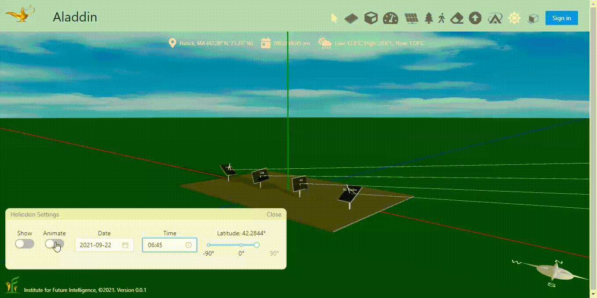
Note that, for the time being, we do not support the actual mechanical design of these trackers, though.
Comparing Different Seasons
The following images show the comparison of the energy outputs of the trackers, along with that of a fixed solar panel titled at 30° facing south, in four seasons. We choose the hiemal solstice (12/22), vernal equinox (3/22), estival solstice (6/22), and autumnal equinox (9/22) to represent the four seasons.
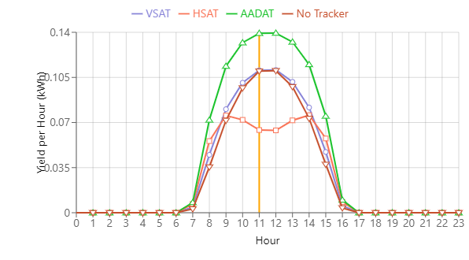
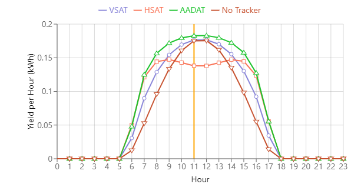
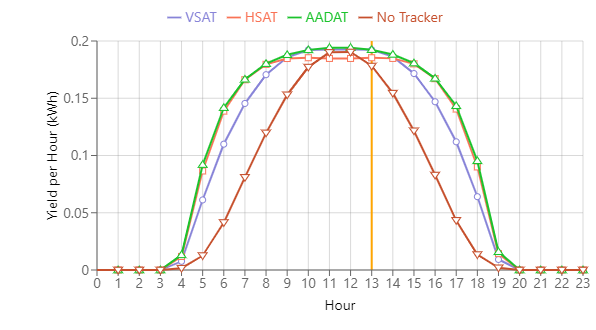
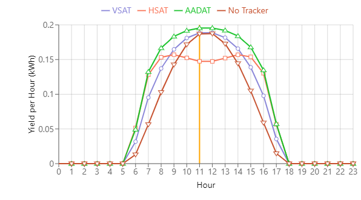
Solar panel outputs on 12/22, 3/22, 6/22, and 9/22 in Boston, MA (Type: SunPower SPR-X21-335-BLK).
| Day | 30° Fixed (kWh) | HSAT (kWh) | 30° Tilted VSAT (kWh) | AADAT (kWh) |
|---|---|---|---|---|
| 12/22 | 0.64 | 0.56 | 0.69 | 0.95 |
| 03/22 | 1.27 | 1.49 | 1.51 | 1.74 |
| 06/22 | 1.55 | 2.27 | 2.13 | 2.33 |
| 09/22 | 1.36 | 1.58 | 1.61 | 1.85 |
| Average | 1.22 | 1.50 | 1.50 | 1.73 |
Note that the average is based on our annual simulation, not the average of only the four days listed in the above table. Annual simulations allow us to see the monthly outputs of solar panels, as shown in the following image.
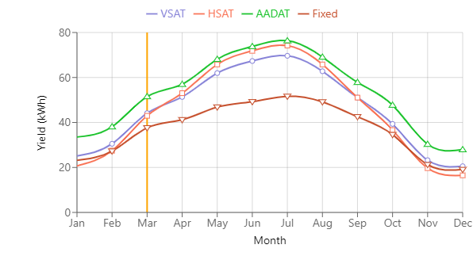
Comparing Different Latitudes
The following images show the comparison of the energy outputs of the trackers, along with that of a fixed solar panel tilted at 15° facing south, in four seasons in Miami, FL, as opposed to the above results about Boston, MA.
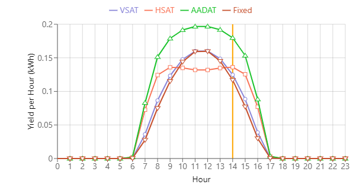
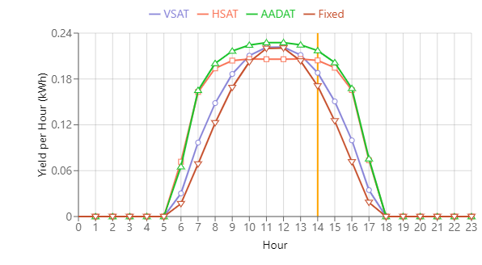
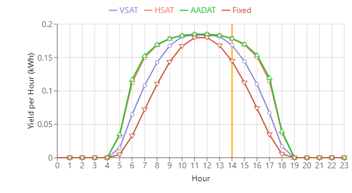
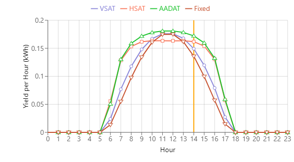
Solar panel outputs on 12/22, 3/22, 6/22, and 9/22 in Miami, FL (Type: SunPower SPR-X21-335-BLK).
| Day | 15° Fixed (kWh) | HSAT (kWh) | 15° Tilted VSAT (kWh) | AADAT (kWh) |
|---|---|---|---|---|
| 12/22 | 1.05 | 1.21 | 1.12 | 1.62 |
| 03/22 | 1.61 | 2.09 | 1.80 | 2.21 |
| 06/22 | 1.43 | 2.03 | 1.72 | 2.05 |
| 09/22 | 1.28 | 1.66 | 1.43 | 1.75 |
| Average | 1.35 | 1.76 | 1.53 | 1.92 |
Note that the average is based on our annual simulation, not the average of only the four days listed in the above table. The following image shows the monthly solar panel outputs under the four conditions.
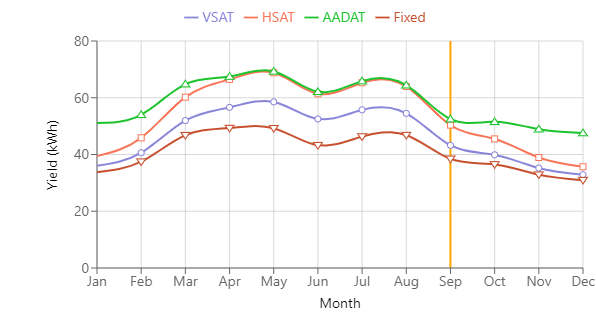
Concluding Remarks
This example shows how Aladdin is enabling engineering design of renewable energy solutions in the browser for everyone. For instance, the above simulation provides users with scientific analysis about the advantages of trackers relative to the latitude. From the comparison, it seems HSAT makes more sense to be adopted in low-latitude areas than in high-latitude areas. Another factor not shown here is that, unlike VSAT and AADAT, the mechanical design of HSAT is simpler as many panels can be combined to be driven by a single motor.
← Back to Aladdin